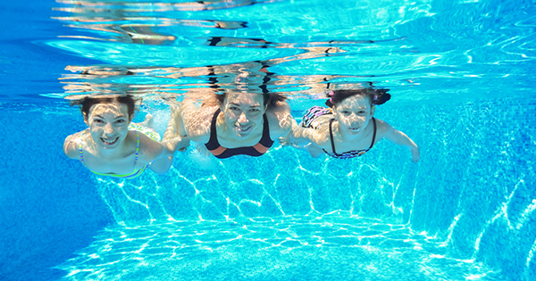

Toda esta información se ve súper fácil e importante, pero ¿cómo logramos mantener una rutina de actividad física? Pues bien, esto no es de otro planeta, para hacer ejercicios que mantengan nuestra buena salud mental y física, no necesitamos mucho, simplemente movernos, ¡y listo! ¿Quieres ideas de ejercicios para mantener una buena salud mental y física? Te compartimos algunas de las más comunes:
Esta es una de las actividades físicas más completas y, lo mejor es que puedes combinarlo con otros ejercicios como aeróbicos dentro de la piscina, que te ayudarán a fortalecer los músculos.
Lo mejor de esta práctica es que no tienes que ser experto, hay diferentes niveles y, si no tienes experiencia, puedes empezar desde el más básico, con estiramientos y movimientos sencillos, pero muy completos, ¡perfectos para fortalecer tus músculos y despejar tu mente por medio de la respiración!

Nada mejor que un poco de música y un buen grupo de amigos para mover el cuerpo y mantenerse en forma. Además, es ideal para hacerlo en pareja, ahí estás cumpliendo la doble tarea: realizando ejercicios para mantener una buena salud mental y física y pasando tiempo de calidad con tu pareja.